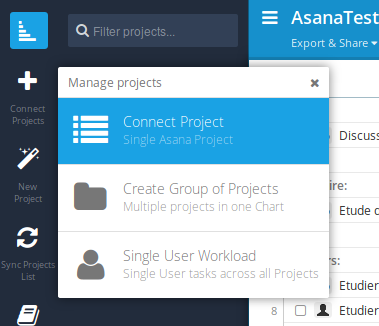

Interfacer Instagantt
Diagramme de Gantt avec Asana
Grace à l'outil Instagantt, vous pouvez également générer automatiquement le diagramme de Gantt de votre projet. Pour cela bien sûr, il est nécessaire que vous ayez associé des dates d'échéance à vos tâches.
Cela vous donne des résultats comme ci-dessous.
Connectez vous donc à InstaGantt avec votre compte Asana en cliquant sur "Sign up with Asana".
Une fois connecté, vous pouvez connecter vos projets à Instagantt. Cliquer sur "Sync Projects lists" dans la barre de gauche.
Puis cliquer sur "Connect projects" comme ci-dessous, et choisissez le project à connecter.

Il est ensuite possible d'exporter le diagramme sous forme d'image ou de pdf en cliquant sur "Export and share" en haut.